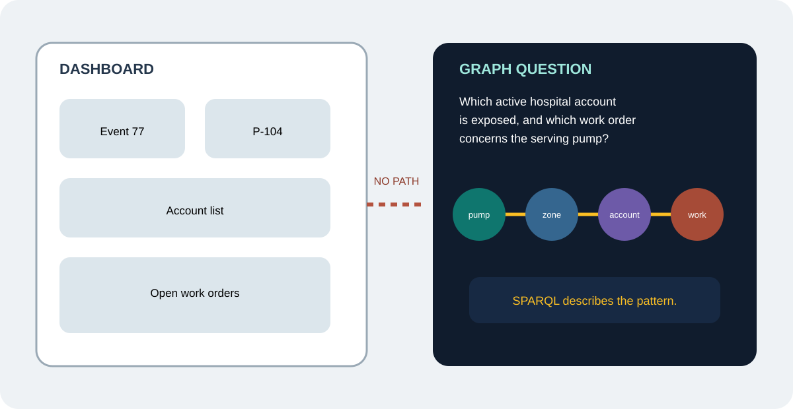
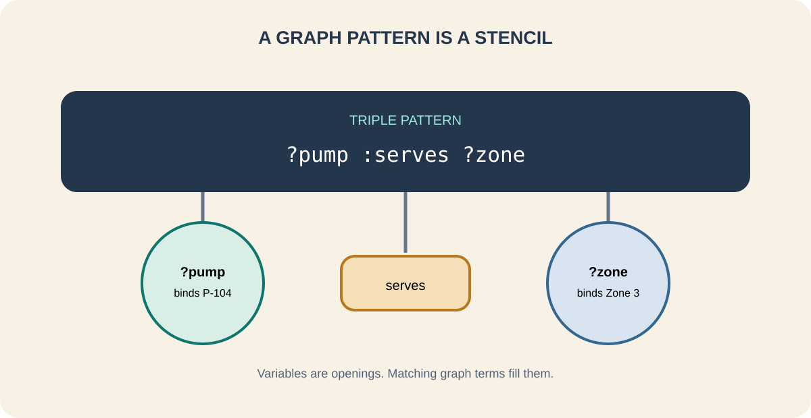
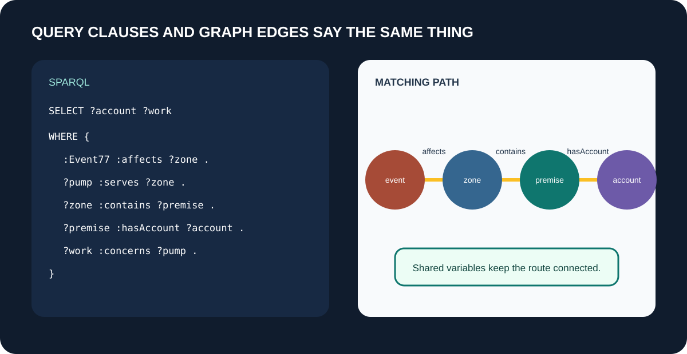
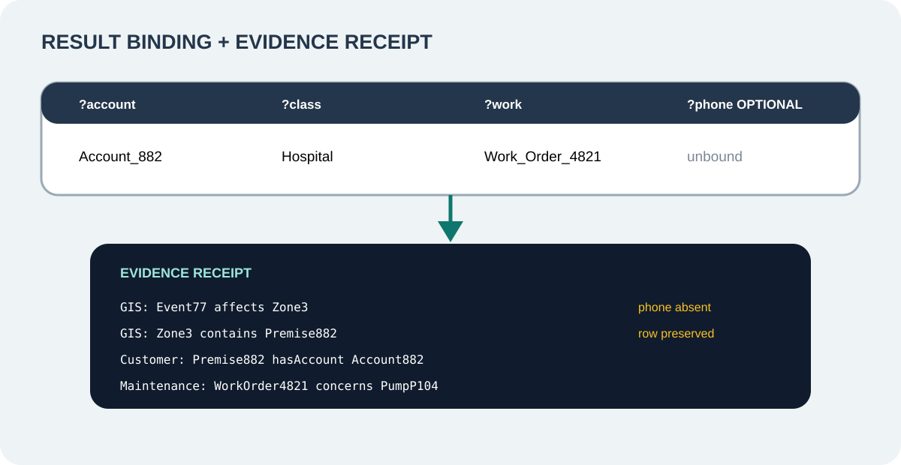

Inspect the lesson relationships
See the concepts, sources, competency, and evidence boundary behind this module.
Turn a utility question into a graph pattern, interpret its bindings, and trace the result to evidence.
Misconception we will change: SPARQL is SQL with new punctuation or a reasoning engine.
A dashboard lists Pressure Event 77, Pump P-104, customer accounts, and open work. The leader asks which active hospital account lies in the affected zone and which work order concerns the serving pump. The records are visible, but the dashboard was not modeled to traverse that path.
SPARQL, pronounced "sparkle," is the standard query language for RDF graphs. You describe the pattern the answer must match. The engine returns bindings for the variables that satisfy that pattern.

Choose the strongest answer, then check it. The feedback explains the boundary.
In a triple pattern, a variable begins with a question mark. ?pump serves ?zone means "find pump and zone values that make this statement match." Fixed identifiers and vocabulary terms constrain the pattern.
Several triple patterns share variables. That shared variable is the join point. You already understand the path from Module 04. SPARQL gives you a standard way to ask for it.

Match each ordinary-language question to the job that answers it. Check all rows together, then revise any row that needs another look.
Add each clause in order. SELECT names the values you want returned. WHERE contains the required graph patterns. FILTER applies a condition. OPTIONAL requests information without discarding a row when that information is absent. LIMIT caps the displayed result count.
Watch the explanation after every clause. SPARQL is not inventing relationships. It is matching the graph statements available under the configured dataset and entailment regime.

Select the clauses in order. Read the graph effect after every addition before continuing.
# Select clause 1 to begin
{'One row may bind ?account to Account 882, ?class to Hospital, and ?work to Work Order 4821. The result is useful because the supporting statements can be shown': 'the event affects the zone, the pump serves the zone, the zone contains the premise, and the account belongs to that premise.'}
A missing optional phone number does not remove the row. A failed required pattern does. That difference is part of query meaning and should be reviewed like any other business rule.

Choose the strongest answer, then check it. The feedback explains the boundary.
SPARQL matches graph patterns. A configured reasoner may make inferred statements available, but the query language does not itself decide ontology entailments. SHACL validates declared shapes separately.
SPARQL can use SERVICE to query a configured remote endpoint. That still requires endpoint availability, credentials, permissions, network policy, query planning, and performance controls. "Federated" does not mean unrestricted.
Select every item the bounded task needs. Leave irrelevant or unauthorized material outside the packet.
Choose a water, wastewater, or stormwater question. Write the variables and triple patterns in plain language before adding syntax. State which information is required, optional, and filtered.
Record the expected bindings and evidence path. If the result could change because a source, ontology, or time window changes, name that dependency.
Record the question variables patterns filter optional data expected bindings evidence sources and limitations.
It is different. SQL usually starts from tables and joins. SPARQL starts from graph patterns. Small readable patterns are approachable without becoming a programmer.
SPARQL matches available graph patterns. A separate configured entailment regime may expose inferred statements to the query.
Yes through mappings federation or services when the architecture supports it. Connections permissions and performance controls remain necessary.
It requests a pattern without removing the whole row when that pattern is absent.
A required pattern may be absent mismatched or outside the selected dataset. No rows does not automatically mean the real-world condition is false.
Riverbend queries and results are instructional. The W3C SPARQL Recommendation defines graph pattern querying. It does not establish source truth, permissions, inference configuration, or operational authority.
See the concepts, sources, competency, and evidence boundary behind this module.
Discuss which relationship your utility repeatedly rebuilds by hand. Community discussion is not governed evidence.
Complete the opening decision, pattern match, clause-by-clause query laboratory, result interpretation, boundary check, and Question-to-Query Sheet.